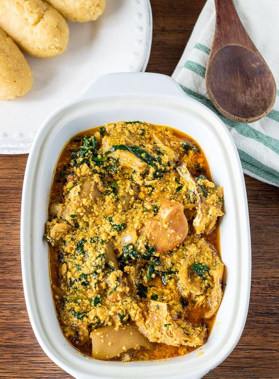

Egusi Soup Recipes

Description
Egusi soup is a Nigerian delicacy that features ground melon or pumpkin
seeds as its main ingredient. Other ingredients include meat or seafood,
fermented beans, onions, and vegetables
The combination of ingredients makes for a flavorful soup. Thanks to the
pumpkin seeds (egusi), this soup has a wonderful nuttiness to it. The rest
of the ingredients add salty, savory, and spicy flavors as well.
The hearty soup is most commonly eaten with pounded yam, which is a
dough-based dish made of, surprise pounded yam.
Ingredients
Seafood
- 1/4 cup Crayfish
- 2 lbs Meats and fish
- 1 Shrimp seasoning
Produce
- 1/2 cup Greens
- 1 Habanero pepper
- 1/2 cup Onion
Oils and Vinegars
Others
- 2 cups Egusi (not ground)
Steps or Directions
Egusi soup happens in three main steps:
-
Boil the meats and/or fish you intend to use. Preferably do this the day
before so making your egusi soup is easy the next day.
-
Grind the egusi. I advise that you always buy whole egusi seeds and
grind them yourself. That way you are sure of the quality of the seeds.
Pre-ground egusi is not always the best.
-
Saute onions in red palm oil, cook egusi in red palm oil then add the
boiled meats, crayfish and seasoning. It is really that easy!